Tabla Ibericos
“Charcuterie board with cured meats, cheese, and pickles.” · Luna Wang
Estas fotografías de stock son imágenes de referencia y no representan necesariamente el emplatado exacto del restaurante.
“Charcuterie board with cured meats, cheese, and pickles.” · Luna Wang
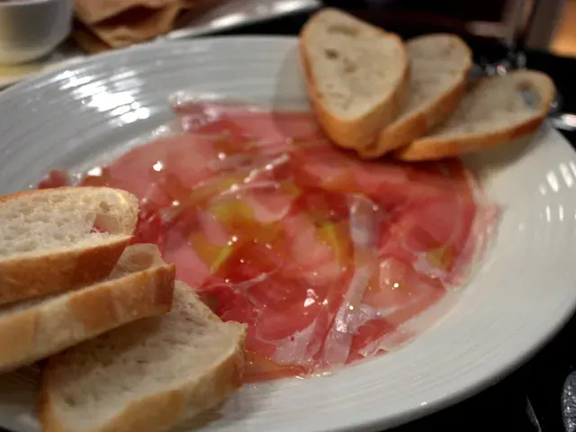

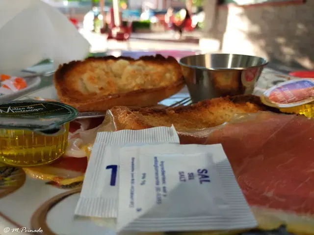
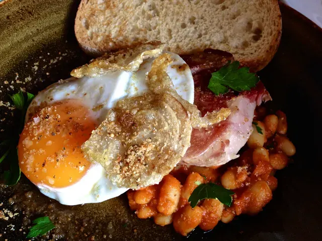
“Smoked pork neck with braised beans, fried duck egg and toast at St Ali in South Melbourne” · ultrakml
Licencia BY · vía Openverse
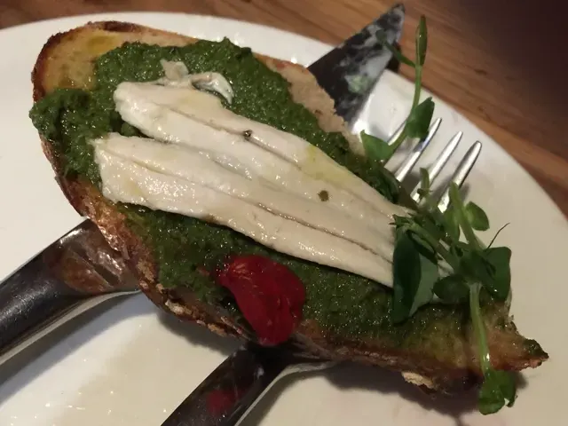
“love your white anchovy toast at nicli next door” · roland
Licencia CC0 · vía Openverse
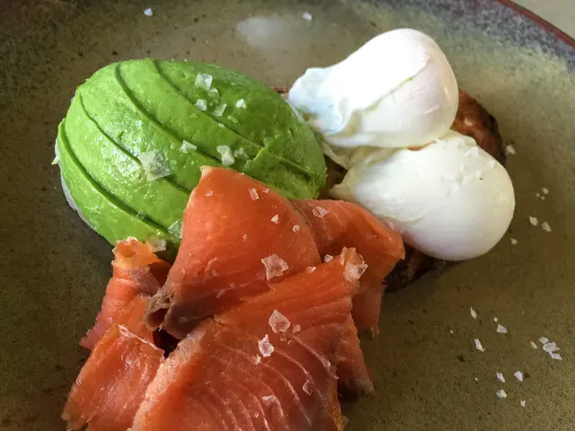
“Poached eggs on toast with smoked salmon and avocado at Anvil Coffee Company in Artarmon” · ultrakml
Licencia BY · vía Openverse
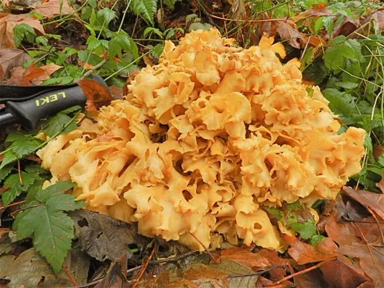
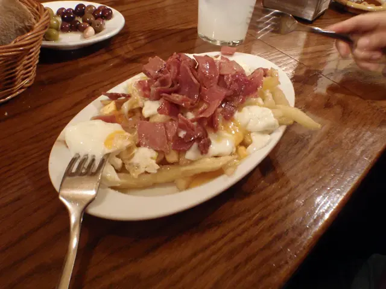
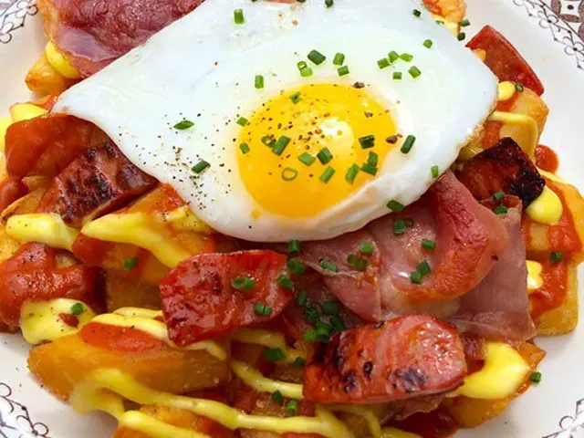
Licencia BY · vía Openverse
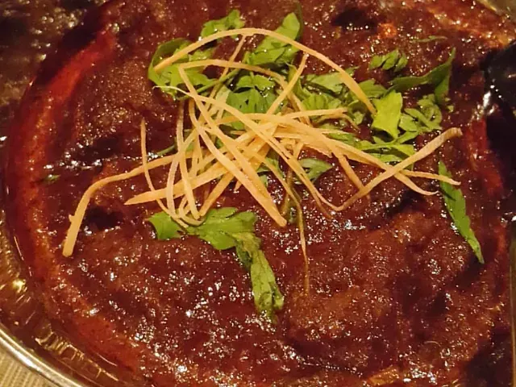
“•Beef Rendang• Yummmmmmm! ⭐⭐⭐⭐ stars for this yummy thang! Malaysian braised beef stew with coconut and spices. #zomato #zomatomeetup #qatar #tradervics #foodie” · debbietingzon
Licencia BY · vía Openverse
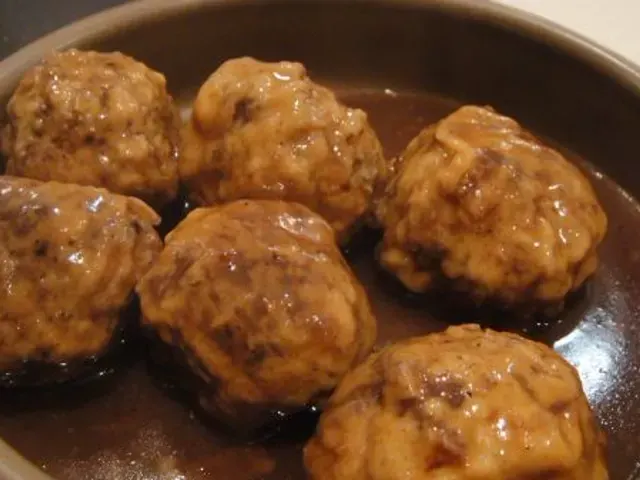
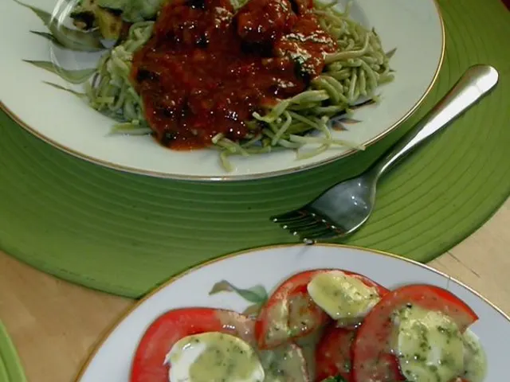
“July 8, 07 Pork in tomato sauce , caprese salad” · redazadi
Licencia BY · vía Openverse
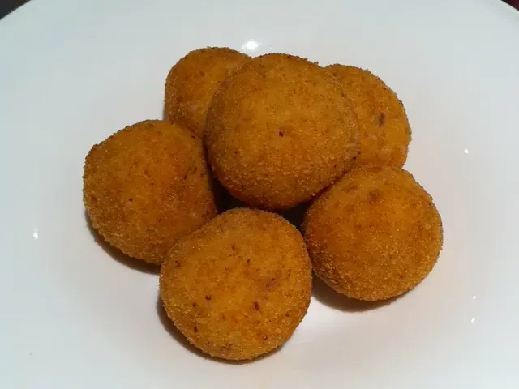
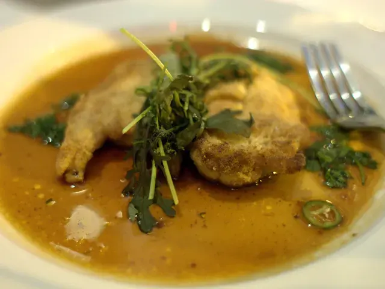
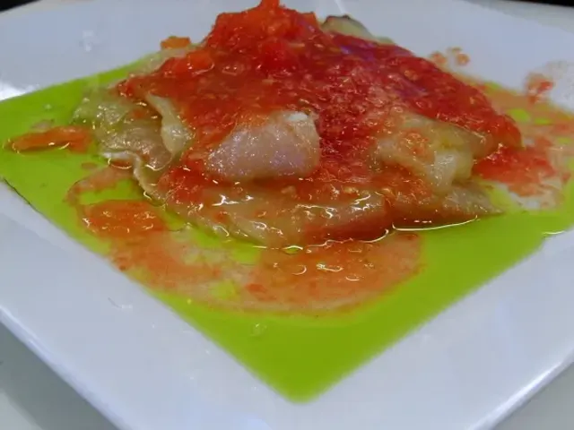
“Bacalao Macerado en Aceite de Oliva con Sal del Himalaya y Tomate Pera Rallado” · jlastras
Licencia BY · vía Openverse
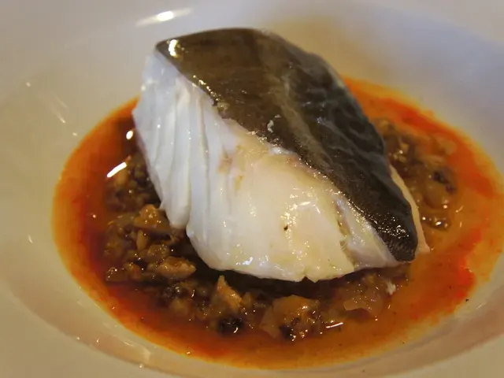
“Bacalao confitado al aroma de ajo y manitas de cerdo guisadas” · Silverman68
Licencia BY · vía Openverse
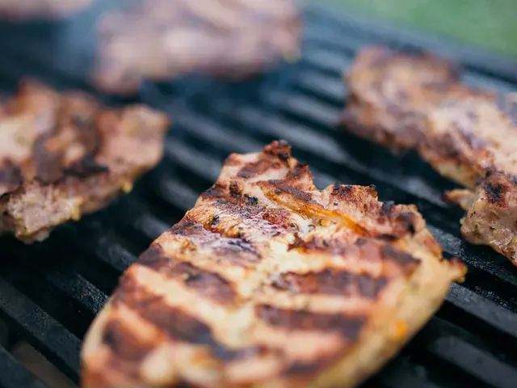
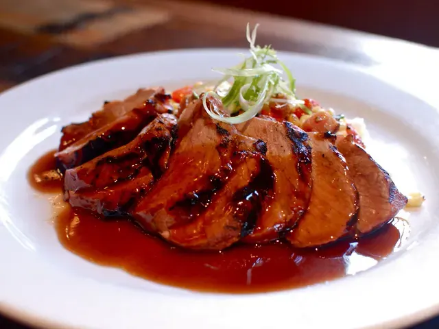
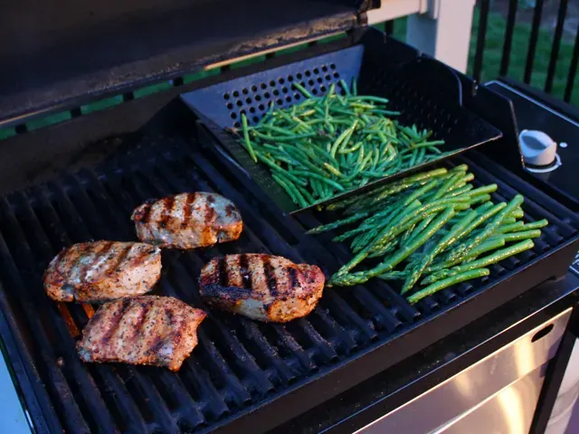
“grilled pork chops, aparagus, and green beans” · woodleywonderworks
Licencia BY · vía Openverse
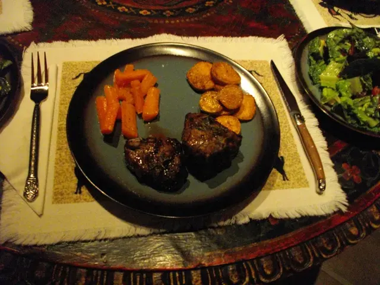
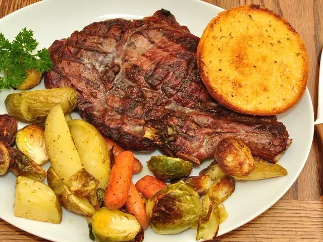
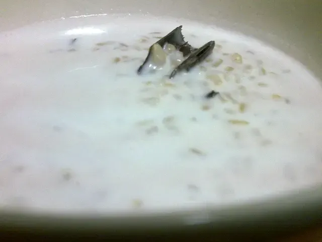
“Coconut rice pudding - Arroz con leche de coco” · Lablascovegmenu
Licencia BY · vía Openverse
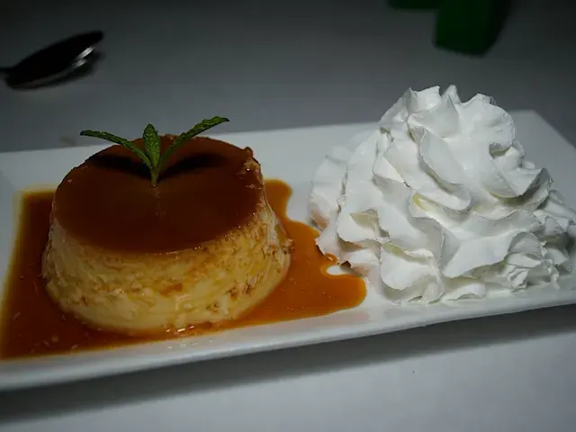

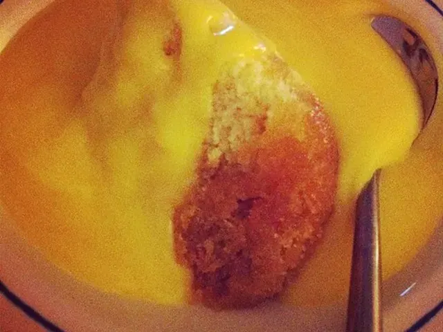
“Steamed syrup pudding with custard! :) #dessert #food #puddings #iphonephotography #iphoneography #instagram” · Podknox
Licencia BY · vía Openverse
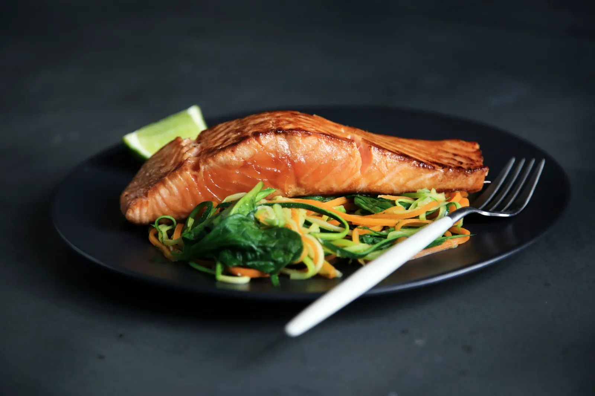